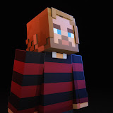

Sobre mí
Un poco de quién soy y para qué existe este sitio

Charly1307
Youtuber · Modder
Hola, soy Charly
En mi canal enseño a crear mods para Minecraft Java usando Forge, desde cero y en español. Mi objetivo es que cualquier persona, aunque no sepa programar, pueda entender cómo funciona el modding y construir sus propias ideas dentro del juego.
En esta página encontrarás los recursos necesarios organizados por versión del juego, los mods que he publicado y las herramientas en Python que uso para agilizar el desarrollo.
Únete a la comunidad en Discord para resolver dudas, compartir tus proyectos y seguir las novedades: